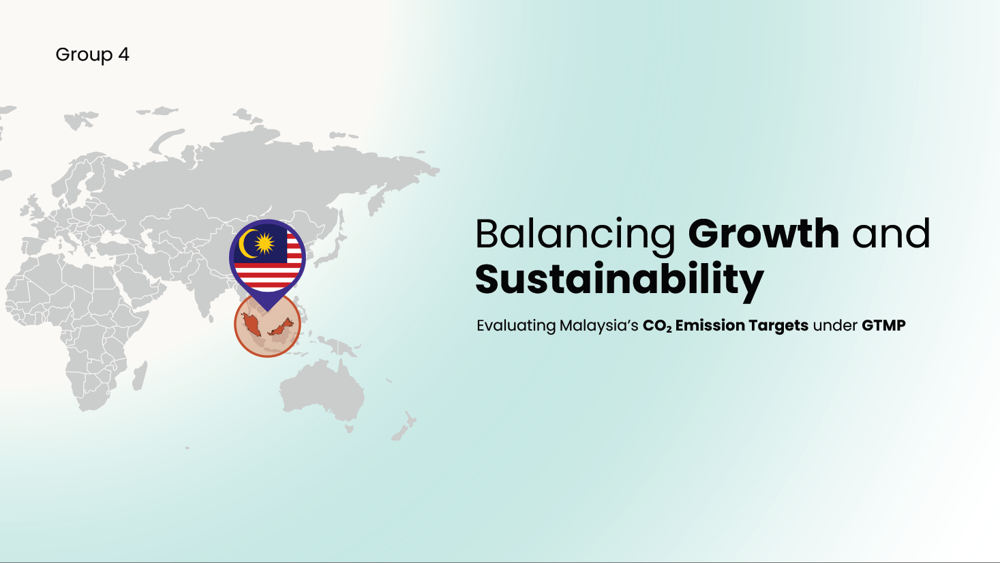

COP30 Policy Recommendations for Malaysia
Project Overview
This project involved acting as a delegate to the COP30 conference, presenting data-driven recommendations to Malaysia on how to reduce its carbon dioxide (CO₂) emissions. The analysis was centered around Malaysia’s Green Technology Master Plan (GTMP) and its commitment to a low-carbon economy, focusing on improving energy efficiency, increasing the share of renewable energy, and addressing energy consumption patterns. The dataset, sourced from multiple reputable organizations, contained over 50,000 rows and 79 columns of data related to CO₂ emissions, energy consumption, and economic activity, which were used to assess the impact of Malaysia’s energy policies.
The analysis was structured around key questions related to Malaysia's energy targets, such as the effectiveness of the GTMP in reducing carbon emissions and increasing energy efficiency. Descriptive statistics and inferential analyses were conducted using Power BI and DAX, with an emphasis on creating actionable insights that aligned with Malaysia's sustainability goals. The team’s findings were presented with SMART recommendations for reducing emissions and improving energy management, supported by data visualizations and comprehensive statistical evidence.
| Deep Dive: Malaysia’s Energy Targets (Access the Full Policy Analysis) |
Skills Strengthened
- Data Wrangling: Preparing and transforming complex datasets for targeted analysis, including identifying proxy variables for missing data points.
- Data Visualization: Designing insightful visuals and dashboards in Power BI, facilitating clear communication of complex insights.
- Exploratory Data Analysis (EDA): Analyzing trends in energy consumption, carbon emissions, and economic performance to assess Malaysia's progress towards its energy targets.
- Data Storytelling: Creating a cohesive narrative that linked analytical findings to actionable recommendations for policy improvements.
- Team Leadership & Collaboration: Leading a team by delegating tasks, ensuring alignment with project goals, and managing deliverables for a coherent final presentation.
- Statistical Analysis: Utilizing descriptive and inferential statistics to project Malaysia's emissions trajectory and evaluate the effectiveness of current energy policies.
This project demonstrated proficiency in data analysis, statistical modeling, and data visualization techniques, while also showcasing the ability to communicate complex, actionable insights for global sustainability efforts.
✨Preview the Pitch That Made the Case 🛠️ Access the Tools That Built the Insights Let’s Talk Data-Driven Strategy